Race screen — 2026-11-12 · updated 15:22
M2 P&L −£4.000 won, 2 lost · 1 to run · 3 not backed (price outside 3.5–8) · 1 non-runner
£2 per M2 priced 3.5–8 at the off (BSP; SP until BSP comes in next morning) · loser −£2 · winner £2 × (BSP − 1) less 5% commission
Order: each race is in market order (shortest forecast price first). A gold
◆ 1/2/3 marks your data model's top 3 — a gold pick at a
longer price is where your data disagrees with the market (a value spot for your eye).
Badges by the name: M2 Market #2 — 2nd favourite in the morning forecast, qualifying race; back only if the live price is 3.5–8.0 ★ EYE finished last run strongly (+score) ⚠ hard trk easy→hard track step-up (−score) ▼ easy trk recently placed at much tougher track (+score) ⚠ draw badly drawn here (−score) ⚠ pace run-style fights the course pace bias (−score) ⚠ ground has tried this going but never placed on it (−score) ▼ cls dropping in class today (+score) ▲ cls rising in class today (−score) ▼ in money in vs opening show ▲ drift drifting vs opening show ⚠ 2 runs / IRE form too little / foreign form to read.
OR column: ↑ green arrow = BHA rating rising (improving horse); ↓ orange = rating falling. TF column: Timeform stars 1–5 (★★★★★ = top rated).
Suit column: going✓ / trip✓ / trk✓ (track toughness) / draw✓ (well drawn).
Rest: green Crse = won there; yellow comment = trouble in running; greyed = novice/bumper or non-handicap 5–6f sprint (left out of the tally — handicap sprints now shown at full opacity). Res fills in after racing (winner green; ✓ = winner came from the top-3 market rows, ◆ = one of your gold data picks won); Spd is a rough home figure; BSP fills in the next morning.
Badges by the name: M2 Market #2 — 2nd favourite in the morning forecast, qualifying race; back only if the live price is 3.5–8.0 ★ EYE finished last run strongly (+score) ⚠ hard trk easy→hard track step-up (−score) ▼ easy trk recently placed at much tougher track (+score) ⚠ draw badly drawn here (−score) ⚠ pace run-style fights the course pace bias (−score) ⚠ ground has tried this going but never placed on it (−score) ▼ cls dropping in class today (+score) ▲ cls rising in class today (−score) ▼ in money in vs opening show ▲ drift drifting vs opening show ⚠ 2 runs / IRE form too little / foreign form to read.
OR column: ↑ green arrow = BHA rating rising (improving horse); ↓ orange = rating falling. TF column: Timeform stars 1–5 (★★★★★ = top rated).
Suit column: going✓ / trip✓ / trk✓ (track toughness) / draw✓ (well drawn).
Rest: green Crse = won there; yellow comment = trouble in running; greyed = novice/bumper or non-handicap 5–6f sprint (left out of the tally — handicap sprints now shown at full opacity). Res fills in after racing (winner green; ✓ = winner came from the top-3 market rows, ◆ = one of your gold data picks won); Spd is a rough home figure; BSP fills in the next morning.
Winner in the market top 3: 4/6 (67%) · in your gold data top 3: 4/6 (67%) — greyed novice / sprint races excluded
⚠ limited form — likely skip
| Res | Horse | Price | BSP | Dr | Form | Crse | Suit | OR | Spd | TF | Last comment |
|---|---|---|---|---|---|---|---|---|---|---|---|
| 2 |  Ballydine Boy ◆ 2 ★ EYE ⚠ hard trk ▲ cls Ballydine Boy ◆ 2 ★ EYE ⚠ hard trk ▲ cls | 1.80 | - | 4-1 | going✓ | 47 | Made all, shaken up 2f out, kept on well | ||||
| 1 | 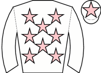 Northern Olympian ⚠ hard trk | 4.00 | - | 6-3 | 55 | Took keen hold, held up in rear, headway after 6th, disputed third before 3 out, soon push | |||||
| 3 |  Show Your Hand ⚠ ground Show Your Hand ⚠ ground | 9.00 | - | 17-2-2---3 | 1r 1p | trip✓ trk✓ | 62 | ★★★☆☆ | Took keen hold, held up in rear, ridden and in touch with leaders 2 out but not fluent and | ||
| 8 | Yafaarr ◆ 1 ▼ cls | 11.00 | - | 4-6-1-1-4-6 | 95 | ★★★☆☆ | Towards rear, some headway soon after halfway, outpaced over 1f out, soon weakened | ||||
| 4 | 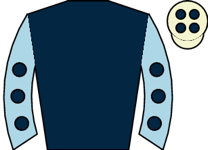 Wyrley Birch ▲ cls | 15.00 | - | 6 | 64 | Mid-division, improved into fourth over 3f out, soon pushed along, weakened over 1f out | |||||
| 6 |  Icy Glen ⚠ ground ▲ cls Icy Glen ⚠ ground ▲ cls | 17.00 | - | 6-11 | 71 | Close up, pushed along 4f out, dropped away quickly | |||||
| 5 | 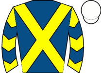 Silver Salver | 26.00 | - | 8-4 | 1r | 58 | Held up in rear, headway after 3 out, took remote fourth after last | ||||
| 0 | 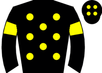 Ricky Roma ◆ 3 | 51.00 | - | - | - | Mid-division, slight mistake 3rd, pushed along and weakened after 3 out, pulled up before | |||||
| 7 | Treshnish Point ⚠ ground | 101.00 | - | 10-6-10 | 55 | ★☆☆☆☆ | Always towards rear, never a factor, slight mistake 3rd, pushed along and weakened after 3 | ||||
| 0 | 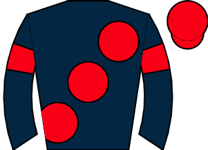 Equi Libre ⚠ ground | 101.00 | - | 11-3-----7 | 1r | 53 | ★★☆☆☆ | Towards rear, outpaced from 3 out, modest headway after 2 out |
⚠ limited form — likely skip
| Res | Horse | Price | BSP | Dr | Form | Crse | Suit | OR | Spd | TF | Last comment |
|---|---|---|---|---|---|---|---|---|---|---|---|
| 4 | 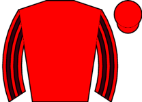 Ivor Bear ◆ 1 | 2.38 | - | 4-2-2-2 | 1r 1p | going✓ trk✓ | 66 | ★★★★☆ | Wore hood to post, jumped right, led, jumped path before 5th, pushed along and headed befo | ||
| 1 |  Eastern Rock ◆ 2 Eastern Rock ◆ 2 | 4.00 | - | 2-4 | going✓ | 65 | Held up in mid-division, keen early, not fluent 1st, headway 3 out, went third before 2 ou | ||||
| 2 | 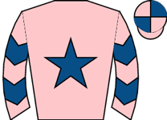 Supreme Force | 5.00 | - | unraced | - | ||||||
| 6 | 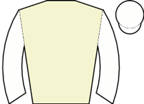 Zains Hope ▲ cls | 8.00 | - | 5 | 60 | Prominent, ridden 3f out, lost position after 2f out, faded inside final furlong | |||||
| 3 | 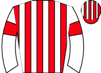 Jack The Master ⚠ hard trk ▲ cls | 11.00 | - | 4 | 40 | Mid-division, ridden over 2f out, kept on one pace from out | |||||
| 5 | 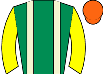 Striking Midnight | 21.00 | - | 3-2-9 | trk✓ | 52 | ★★★☆☆ | Never better than midfield | |||
| 0 | 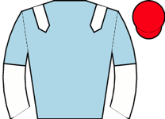 Definite Call ◆ 3 ▼ cls | 34.00 | - | 3-- | 58 | Always in rear, not fluent 4th, pulled up before 7th | |||||
| 7 | 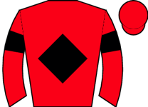 Jax Belle | 67.00 | - | 14-3-6-6 | 58 | ★★☆☆☆ | Prominent on outside early, chased leaders, not fluent 6th, weakened after 2 out | ||||
| 0 | 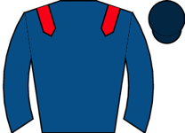 Prince Of Clova | 151.00 | - | 5---13 | 40 | ★☆☆☆☆ | Not always fluent and ran in snatches, prominent, wandered approaching 1st, soon dropped t |
⚠ limited form — likely skip
| Res | Horse | Price | BSP | Dr | Form | Crse | Suit | OR | Spd | TF | Last comment |
|---|---|---|---|---|---|---|---|---|---|---|---|
| 1 | 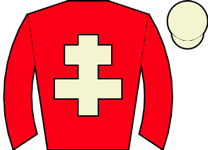 Tell The Tale ▲ cls | 3.25 | - | 8-6-4-7-2-1 | going✓ trip✓ | 101 | 58 | ★★★★★ | Prominent, led 3rd, joined 6th, going okay and led outright before 3 out, a length ahead 2 | ||
| 5 | 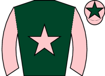 Chemoulin ◆ 2 | 4.00 | - | 5-4-1-4 | 1r | going✓ | 109 | 76 | ★★★☆☆ | Midfield, closed on leaders before 3 out, ridden and not fluent 2 out, outpaced after last | |
| 6 | 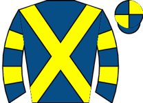 Catwalk Girl ◆ 1 | 5.50 | - | 3-5-3---1-3 | trip✓ | 110 | 70 | ★★★★☆ | Tracked leader, lost second after 3 out, regained second 2 out, ridden to chase winner aft | ||
| 3 | 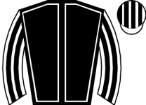 Another High Five ⚠ ground | 6.50 | - | 2-3-2-2-5-8 | trk✓ | 102 | 41 | ★★★☆☆ | Chased leaders, dropped to mid-division 4th, outpaced after 14th, well beaten from 4 out | ||
| 2 | 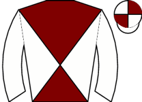 Firm But Fair ◆ 3 | 8.50 | - | 2-3-3-3 | trk✓ | 110 | 52 | ★★★☆☆ | In touch, awkward 3rd, chased leaders after 7th, ridden and went third before 3 out, plugg | ||
| 4 | 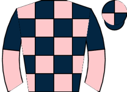 Western George ▲ cls | 9.00 | - | 3-8-5-5-2-4 | going✓ trk✓ | 103 | 52 | ★★★☆☆ | Towards rear, pushed along and closed steadily 3 out, went modest fourth after 2 out, soon |
| Res | Horse | Price | BSP | Dr | Form | Crse | Suit | OR | Spd | TF | Last comment |
|---|---|---|---|---|---|---|---|---|---|---|---|
| 1 | 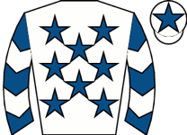 Noble Recall ◆ 3 | 3.25 | - | 4---1-3-1-2 | 1r 1p | going✓ trk✓ | 81 ↑ | 59 | ★★★★★ | Prominent, led 4 out, pushed along 3 out, unbalanced when bumped and headed last, outpaced | |
| 2 |  Miss Denver ◆ 2 M2 ▼ cls Miss Denver ◆ 2 M2 ▼ cls | 3.75 | - | 3-2-2-2-2-2 | 1r 1p | trk✓ | 89 | 78 | ★★★★☆ | Led, set steady pace, went clear with one other rival after 1st, pestered after 2 out, hea | |
| 5 | Crac De Megaudais ★ EYE | 4.00 | - | 5-4---3-4-1 | 79 ↓ | 49 | ★★★★☆ | Wore hood to start, prominent, took second 14th, led after 15th, headed soon after 2 out, | |||
| 0 | 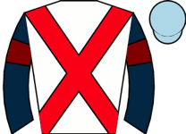 Bongo Man | 8.50 | - | 8-3---2-7-4 | going✓ | 98 ↓ | 51 | ★★☆☆☆ | Chased leader, mistake and dropped to rear 6th, ridden and weakened before 4 out | ||
| 6 | 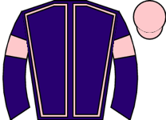 Riviera Walk ◆ 1 | 11.00 | - | 4---1------ | going✓ trk✓ | 100 | 75 | ★★☆☆☆ | Prominent, weakened after omitted 3 out, pulled up before 2 out | ||
| 4 | 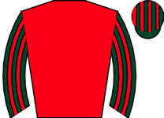 Calli Black ⚠ ground | 15.00 | - | 5-5-7-7-8-5 | 80 ↓ | 54 | ★★☆☆☆ | Jumped right 1st, led after 1st, soon clear, jumped badly right 7th, soon reduced lead, he | |||
| 3 | 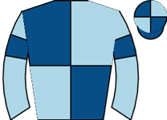 Boys Of Wexford | 17.00 | - | ----4-1---5 | trk✓ | 81 ↑ | 60 | ★★★☆☆ | Midfield, jumped right 2nd, dropped to rear before 12th, not fluent 4 out, slow 3 out, soo | ||
| 0 |  Double Indemnity Double Indemnity | 21.00 | - | 6-2---4-5 | going✓ trk✓ | 96 | 60 | ★★☆☆☆ | Chased leaders on inner, lost ground before 5th, closed 8th, weakened 3 out |
⚠ limited form — likely skip
| Res | Horse | Price | BSP | Dr | Form | Crse | Suit | OR | Spd | TF | Last comment |
|---|---|---|---|---|---|---|---|---|---|---|---|
| 1 | 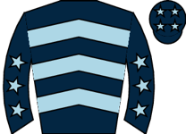 Teofimo ◆ 2 ▼ cls | 2.88 | - | 6-7-6-3-6-2 | going✓ trip✓ trk✓ | 100 ↑ | 70 | ★★★☆☆ | Pulled hard, led, clear briefly early, went clear again before 3rd, 22 lengths clear 4 out | ||
| 0 | 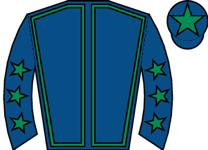 This Sway ◆ 1 | 3.50 | - | 9-1-4-4-2-2 | going✓ trip✓ | 94 | 73 | ★★★★★ | Led, landed awkwardly 6th, pushed along after 3 out, landed awkwardly and headed 2 out, ou | ||
| 4 | 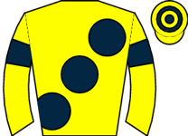 Bouboule | 5.50 | - | 11-6-9-5-5-3 | trk✓ | 75 ↑ | 67 | ★★★☆☆ | Front mid-division, chased leaders after 3rd, ridden after 2 out, kept on one pace | ||
| 2 | Stylia ⚠ ground | 6.00 | - | 8-11-4-4-3-2 | 85 | 48 | ★★★★☆ | Led, headed after 2nd, chased leaders from 4th, joined leaders when slow 8th, led on long | |||
| 0 | 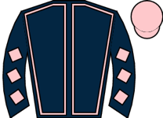 Toby Two Scoops ◆ 3 | 11.00 | - | 3-2-3---2-- | going✓ trk✓ | 91 | 57 | ★★★☆☆ | Held up in rear, struggling after 7th, soon detached, pulled up before 3 out | ||
| 3 |  C'Est Pour Moi ▼ cls C'Est Pour Moi ▼ cls | 21.00 | - | 9-6-7-8-3 | 87 | 52 | ★★☆☆☆ | Held up in touch towards rear, hampered after 4th, pushed along and in touch 3 out, weaken |
| Res | Horse | Price | BSP | Dr | Form | Crse | Suit | OR | Spd | TF | Last comment |
|---|---|---|---|---|---|---|---|---|---|---|---|
| 4 |  Burning Embers Burning Embers | 4.50 | - | 6-4-6-6-6-2 | going✓ | 90 | 53 | ★★★★★ | Mid-division, closed into third 10th, chased front rank before 3 out, not much room on rai | ||
| 7 | 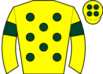 Bits Ballou M2 | 6.50 | - | 6-4-2-3-1-4 | going✓ | 81 | 51 | ★★★☆☆ | Held up towards rear, not fluent 7th or 8th, headway 3 out, went second briefly after 2 ou | ||
| 3 |  Briery Butterfly M2 Briery Butterfly M2 | 6.50 | - | 3-2-2-3---4 | going✓ trk✓ | 93 ↑ | 55 | ★★★☆☆ | Led, joined after 3rd, mistake 7th, not fluent 8th, ridden and lost ground 3 out, outpaced | ||
| 6 |  Seasmoke ◆ 1 Seasmoke ◆ 1 | 7.00 | - | 1-2-3-3-3-3 | 1r 1W | going✓ trk✓ | 89 | 59 | ★★★☆☆ | Raced in second, asked for effort after 3 out, lost second last, no extra run-in | |
| 1 |  Diamond Grace ◆ 2 ▼ cls Diamond Grace ◆ 2 ▼ cls | 7.00 | - | 5-3-2-5 | 95 | 59 | ★★★☆☆ | Led, not fluent 2nd, shaken up 2 out, ridden and headed before last, soon weakened | |||
| 8 | 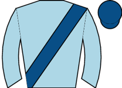 Reflection Of You ◆ 3 | 8.00 | - | 5-3---1-3-4 | going✓ | 90 | 69 | ★★★★☆ | Prominent, not fluent 2nd, close up 2 out, weakened flat | ||
| 2 | 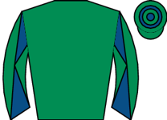 Fireball Frenzy ▼ cls | 8.50 | - | --2-5 | 1r 1p | trk✓ | 95 | 51 | ★★★★☆ | Chased leaders, pushed along before 3 out, soon weakened | |
| 5 | 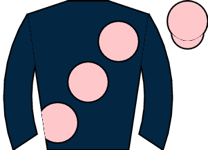 It's Maisy | 9.00 | - | 4-2-4-3-1-8 | going✓ trk✓ | 96 | 58 | ★★★★☆ | In touch with leaders, outpaced after 2 out, soon weakened |
| Res | Horse | Price | BSP | Dr | Form | Crse | Suit | OR | Spd | TF | Last comment |
|---|---|---|---|---|---|---|---|---|---|---|---|
| 0 | Trust House ◆ 1 | 3.75 | - | 3-5-1-1-2-3 | 2r 1W | going✓ trip✓ trk✓ | 120 ↑ | 67 | ★★☆☆☆ | Chased front pair, went second omitted 2 out, ridden and led narrowly omitted last, kept o | |
| 0 | 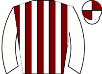 Ballygeary ◆ 3 M2 | 4.33 | - | 5-3-5-5-1-2 | 3r 1W | going✓ trip✓ trk✓ | 106 | 64 | ★★★★☆ | In rear but in touch, headway before 2 out, kept on from last, went second final 50yds | |
| 0 | St Faz ◆ 2 ▼ cls | 4.50 | - | 7-1-5-2-9-- | 1r | trip✓ | 120 ↑ | 93 | ★★★★★ | Prominent, led 3rd, pecked 8th, not fluent 10th, bad mistake and almost unseated 4 out, so | |
| 0 | 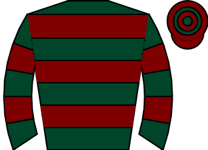 Tilehurst | 6.50 | - | 2-4-5-1-2-3 | 1r | going✓ trip✓ trk✓ | 109 ↑ | 65 | ★★★★☆ | In touch towards rear, well behind after 3rd, in touch after 5th, pushed along after 3 out | |
| 0 |  Time In A Bottle ⚠ IRE form Time In A Bottle ⚠ IRE form | 8.50 | - | 4-2-2-6---6 | 107 ↑ | 60 | ★★★☆☆ | Raced in second until before 3rd, weakened before 2 out | |||
| 0 |  Pigeon House Pigeon House | 13.00 | - | --2---4-4-4 | 3r 1p | trip✓ trk✓ | 115 ↓ | 62 | ★★☆☆☆ | Held up behind leaders, ridden and weakened before 2 out | |
| 0 | 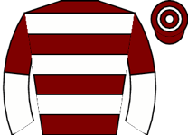 Moutarde ⚠ ground | 13.00 | - | 9---8---5-2 | 106 ↓ | 60 | ★★★★☆ | Close up, led before 3rd, headed after 3 out, chased winner after 2 out, kept on, no impre |
| Res | Horse | Price | BSP | Dr | Form | Crse | Suit | OR | Spd | TF | Last comment |
|---|---|---|---|---|---|---|---|---|---|---|---|
| 1 |  Koala Rose ◆ 1 ★ EYE ▼ easy trk ▼ cls Koala Rose ◆ 1 ★ EYE ▼ easy trk ▼ cls | 1.57 | - | 3-3-2-2-3-2 | going✓ trk✓ | 89 | ★★★★☆ | Keen, prominent, ridden and headway to lead over 3f out, kept on well over 1f out, pressed | |||
| 0 |  Echo Valley ◆ 2 M2 ★ EYE Echo Valley ◆ 2 M2 ★ EYE | 2.50 | - | 7-4-2-4-4-1 | 1r 1W | going✓ trip✓ trk✓ | 76 | ★★★★☆ | Held up in mid-division, headway after 3 out, led next, clear before last, ran on well | ||
| 2 | 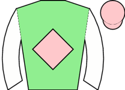 Princess Of Habo ◆ 3 | 2.62 | - | 5-4-6-1 | - | ★★★★★ | |||||
| 3 | 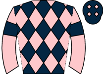 Antiquarian | 17.00 | - | 5-6-10-10-4 | 68 | ★★☆☆☆ | Towards rear, mistake 6th, some headway after 3 out, kept on for modest fourth |
⚠ limited form — likely skip
| Res | Horse | Price | BSP | Dr | Form | Crse | Suit | OR | Spd | TF | Last comment |
|---|---|---|---|---|---|---|---|---|---|---|---|
| 1 | Governors Rock ◆ 1 ▼ cls | 1.91 | - | 1-1-10-15-1-9 | trip✓ trk✓ | 69 | ★★★★★ | Jumped right at times, led after 1st, headed next, led before 3rd, headed before last, wea | |||
| 2 | 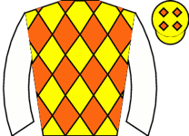 Moscow Star | 5.00 | - | 5-5-4-10-2 | trk✓ | 63 | ★★★★☆ | Led, not fluent 4 out, hit 2 out and ridden, soon headed, stayed on run-in, no impression | |||
| 5 | Jaunty Trooper ◆ 3 ▲ cls | 7.00 | - | --6-2 | trip✓ trk✓ | 60 | ★★★☆☆ | Prominent, ridden to press leader 2f out, kept on final furlong, always held towards finis | |||
| 3 | 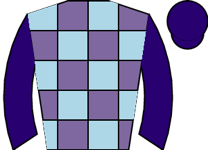 Thetype Istitle ◆ 2 ★ EYE | 9.00 | - | 1-7-9-3 | going✓ trip✓ trk✓ | 62 | ★★☆☆☆ | Prominent, lost position 3 out, soon ridden and outpaced, rallied into third before 2 out, | |||
| 8 | Robin Blue Breast ▼ easy trk | 9.00 | - | 5-2-4 | going✓ trip✓ trk✓ | 58 | ★★☆☆☆ | Took keen hold, in touch on outer, outpaced over 5f out, soon ridden, went fourth home tur | |||
| 4 | 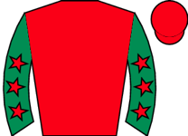 Valenciaga | 26.00 | - | 4-2-7-9-5 | 2r | trk✓ | 56 | ★★☆☆☆ | Held up in rear, hampered after 4th, in touch 3 out, soon ridden, weakened before next | ||
| 6 |  Dressed Overall Dressed Overall | 34.00 | - | 7 | 40 | Always behind | |||||
| 10 | 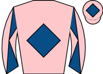 Unbelievable Jeff | 34.00 | - | 8 | 40 | Always towards rear, tailed off | |||||
| 0 | 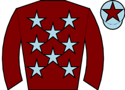 Sir Vinnie Kent | 67.00 | - | --- | 70 | Towards rear, dropped to last and struggling before mistake 5th, tailed off and pulled up | |||||
| 11 |  Bonnie Lazarevic Bonnie Lazarevic | 67.00 | - | 7-- | 1r | 59 | Rear of mid-division, some headway after not fluent 3 out, soon weakened, pulled up before | ||||
| 9 |  Maria's Joy Maria's Joy | 67.00 | - | 10-7-9 | 48 | ★☆☆☆☆ | Rear of mid-division off the pace, never involved | ||||
| 7 | 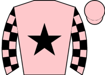 Jersey Tex | 67.00 | - | 8---7 | 1r | 49 | ★☆☆☆☆ | Towards rear of mid-division and off the pace, remote seventh 3 out, tailed off |
| Res | Horse | Price | BSP | Dr | Form | Crse | Suit | OR | Spd | TF | Last comment |
|---|---|---|---|---|---|---|---|---|---|---|---|
| 6 |  Lightning Flash ◆ 1 ★ EYE ▼ easy trk ▲ cls Lightning Flash ◆ 1 ★ EYE ▼ easy trk ▲ cls | 2.75 | - | --6-3-3-4-1 | trk✓ | 110 ↓ | 60 | ★★★★☆ | Made all, steadily asserted from 2 out, bad mistake and landed awkwardly last, soon recove | ||
| 1 |  Mr Jukebox M2 ▲ cls Mr Jukebox M2 ▲ cls | 3.50 | - | 6-5-3-8-1-2 | 1r | trk✓ | 109 | 55 | ★★★★★ | Tracked leaders, led before 2 out, shaken up after 2 out, kept on and pressed run-in, head | |
| 4 | 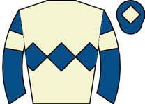 Windsor Blue ◆ 3 | 8.00 | - | 3-5-4-1-5-2 | trip✓ trk✓ | 106 ↑ | 68 | ★★★☆☆ | Held up in rear, slightly hampered 9th, ridden and headway to chase leaders 3 out, kept on | ||
| 2 |  Person Of Interest ◆ 2 ▲ cls Person Of Interest ◆ 2 ▲ cls | 9.00 | - | --6-1-2---5 | going✓ trk✓ | 100 ↑ | 78 | ★★★☆☆ | Held up in rear, headway when mistake 3 out, weakened 2 out | ||
| 5 | Lydeard Girl ▲ cls | 9.00 | - | 5-6-4-2---2 | 2r 1p | trip✓ trk✓ | 95 | 63 | ★★★★☆ | Midfield, not fluent 9th, headway going okay 2 out, soon ridden, not fluent and briefly le | |
| 3 | 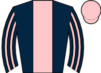 Dublinofficecallin ⚠ ground ▲ cls | 11.00 | - | 6-11-7-1-7-10 | trk✓ | 89 | 44 | ★★★☆☆ | Midfield, dropped to last 2 out, soon well beaten | ||
| 0 |  City Of Diamonds City Of Diamonds | 17.00 | - | 6-6-14-13-7-13 | 105 ↓ | 53 | ★★★☆☆ | Prominent, lost position when bad mistake 3 out, soon weakened |
⚠ limited form — likely skip
| Res | Horse | Price | BSP | Dr | Form | Crse | Suit | OR | Spd | TF | Last comment |
|---|---|---|---|---|---|---|---|---|---|---|---|
| 2 | 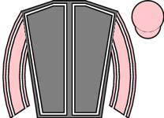 Elated ◆ 3 ▼ easy trk | 2.00 | - | 3-3-2---2-2 | going✓ trk✓ | 99 | 54 | ★★★★☆ | Led, two lengths ahead 2 out, ridden and reduced lead approaching last, kept on but headed | ||
| 0 | 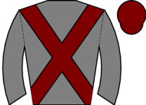 Alan Bresil ★ EYE ▲ cls | 3.00 | - | 2-5-4-6-3-3 | 1r 1p | going✓ trip✓ trk✓ | 93 ↓ | 48 | ★★★★☆ | Chased leaders, ridden before 2 out, briefly outpaced before last, stayed on strongly run- | |
| 0 |  Cinnodin ◆ 2 ▼ easy trk ▲ cls Cinnodin ◆ 2 ▼ easy trk ▲ cls | 3.50 | - | 2---10-4-1-3 | going✓ trip✓ trk✓ | 104 | 66 | ★★★★☆ | Chased winner, pushed along after 6th to press winner, strongly ridden to keep tabs on win | ||
| 0 | 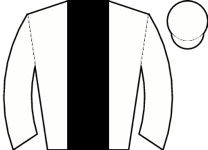 Oneinthewell ◆ 1 ▼ cls | 5.50 | - | 2-2-1-4-4-3 | going✓ trk✓ | 109 ↑ | 82 | ★★★★★ | In touch with leaders, went left 2 out, hampered last, stayed on and took third towards fi | ||
| 0 | 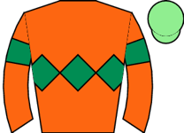 Wishful Wings ▲ cls | 21.00 | - | --11-8-4---4 | 74 | 64 | ★★☆☆☆ | Held up in rear, ridden and in touch 3 out, headway approaching last, kept on same pace ru | |||
| 1 |  Lord Cauvelliere ⚠ ground ▲ cls Lord Cauvelliere ⚠ ground ▲ cls | 21.00 | - | 4-5-6---7-4 | 1r | 78 ↓ | 56 | ★★☆☆☆ | Veered left start, held up in rear on outside, steady headway from 4th, no impression befo |
| Res | Horse | Price | BSP | Dr | Form | Crse | Suit | OR | Spd | TF | Last comment |
|---|---|---|---|---|---|---|---|---|---|---|---|
| 1 |  Seraphic ◆ 1 ▼ cls Seraphic ◆ 1 ▼ cls | 2.38 | - | 1-5-3-1-1-1 | going✓ trip✓ trk✓ | 102 ↑ | 63 | ★★★★☆ | Towards rear, went third before 6th, soon left chasing leader, led before 4 out, eased cle | ||
| 4 | 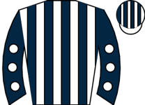 Lucky Sevens M2 | 6.00 | - | 2-1-4-12-4-2 | going✓ trip✓ trk✓ | 99 ↑ | 58 | ★★★☆☆ | Soon raced in second, dropped to third 3 out, pushed along and regained second on bend bef | ||
| 0 | Zenato ◆ 2 | 8.00 | - | 9-1-1-5-2-- | going✓ trip✓ trk✓ | 104 ↑ | 67 | ★★★☆☆ | Taken down early and wore hood to start, soon raced in second, closed leader 6th, pushed a | ||
| 5 |  Gaelic Saint ▼ cls Gaelic Saint ▼ cls | 8.00 | - | 10-2-4-6-7-4 | trk✓ | 105 | 46 | ★★★★☆ | Led, extended advantage by many lengths after 5th, reduced advantage 3 out, soon ridden, a | ||
| 3 | Taritino ▼ cls | 11.00 | - | 1-4-4-6-4-8 | going✓ | 100 | 84 | ★★★★★ | Wore hood to start, prominent, soon raced in second, pushed along 2f out, outpaced over 1f | ||
| 7 | Happy Chandler ▼ cls | 11.00 | - | 2-2-10-5-4-3 | going✓ trk✓ | 91 | 58 | ★★★☆☆ | Towards rear, not fluent 3rd, went remote third before 2 out, never involved | ||
| 6 | Phoenix Risen ▼ cls | 13.00 | - | 3-2-1-5-5-8 | 1r | trip✓ trk✓ | 103 | 55 | ★★★☆☆ | Prominent, not fluent 1st, led before 2nd, joined 3rd, headed 3 out, ridden and weakened b | |
| 2 | Maasai Mara ◆ 3 ▼ cls | 17.00 | - | 7-4-12-2-7-5 | going✓ | 105 ↓ | 84 | ★★★★☆ | Raced in last pair, progress into third 5f out, asked for effort 2f out, soon weakened | ||
| 8 | No Hard Feelings ⚠ ground ▼ cls | 34.00 | - | 8-7-11-6-15 | 98 | 40 | ★★☆☆☆ | Chased leader, weakened tamely before 3 out |
⚠ limited form — likely skip
| Res | Horse | Price | BSP | Dr | Form | Crse | Suit | OR | Spd | TF | Last comment |
|---|---|---|---|---|---|---|---|---|---|---|---|
| 0 | Eagles Promise ◆ 2 ▼ cls | 2.62 | - | 7-5 | 61 | Towards rear, headway over 3f out, hung left when chased leaders over 2f out, outpaced ove | |||||
| 0 | Ms Belle ◆ 3 | 4.00 | - | unraced | - | ||||||
| 0 | Three Of Spades ◆ 1 ▼ cls | 5.50 | - | 5 | 57 | Mid-division, pushed along 2f out, plugged on same pace | |||||
| 0 | Nova Foresta | 6.50 | - | unraced | - | ||||||
| 0 | Flora Hobbs ▼ cls | 7.50 | - | 10 | 40 | Took keen hold, prominent, ridden and lost position over 5f out, tailed off 3f out |
Decision support, not betting advice. Prices are forecast/early —
check the live market. Speed figures are final-time only (no sectionals), so weigh
them with your own read on how a race was run.